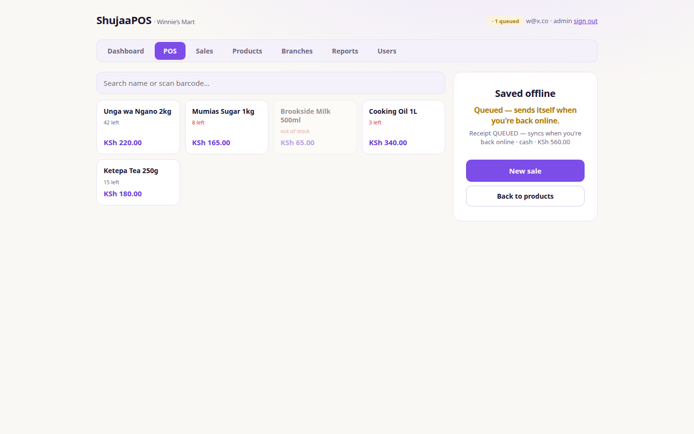

What Happens When Your POS Loses Internet?
ShujaaPOS · November 2026 · 5 min read
It's 2pm on a Saturday, your busiest hour. A customer is holding two crates of soda and the till just... stops. Not your till's fault. The fibre dropped. What happens next depends entirely on which kind of POS you're running.

Two very different failures
A cloud-only POS keeps its brain on a server somewhere else. Your till is just a screen that talks to it. When the connection drops, the screen goes quiet: no sale, no receipt, no stock update. You end up writing the transaction on paper and promising to key it in later.
An offline-first POS keeps everything it needs on the machine in front of you. The catalogue, the prices, the stock count. When internet disappears, the sale finishes exactly as it would have otherwise. The only thing that changes is where the record goes.
What actually happens on an offline-first till
Here's the honest version, because we built one:
- The sale completes locally. Receipt prints, stock drops, change is shown. Nothing the customer sees changes.
- The record of that sale is written into a local queue called an outbox. Think of it as an envelope stamped "to the cloud" that sits in a drawer.
- When the internet comes back, the queue drains on its own. Each queued event gets pushed up, confirmed, and marked done. Nobody has to trigger anything.
- Every event carries its own ID, so if the same sale gets pushed twice after a flaky reconnect, the server ignores the duplicate.
The result: your end-of-day report on the cloud dashboard matches what the till recorded. It just catches up a little late.
What still needs internet
Worth being straight about this. Some things genuinely cannot work offline:
- New products you add on another device won't appear until a sync happens.
- Cloud reports only show what has been pushed so far.
- M-Pesa confirmations from the provider still need a connection. The sale itself records fine either way.
Your best fallback is still paper
Even with offline-first, keep a receipt book behind the counter. Machines fail, power fails harder than internet does. A till that keeps working through an outage plus a paper backup for the rare disaster is a setup that survives almost anything Nairobi throws at it.
Try ShujaaPOS free